Charles Babbage
Charles Babbage started working on a Difference Engine in 1819, for which he received funding from the British government.
Breaking Down the Contributions of Sound and Music in the Development of Computers
We begin our story from Charles Babbage.
We take no interest in his interest in Cabbage.
Charles Babbage
Charles Babbage started working on a Difference Engine in 1819, for which he received funding from the British government.
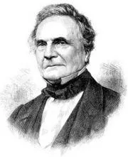
The Difference Engine
The engine was aimed at calculating accurate mathematical tables, especially logarithmic and trigonometric tables. These were useful in navigation and astronomy.
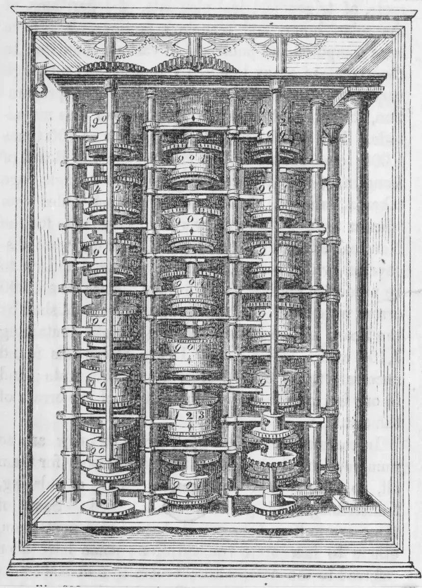
The Analytical Engine
Soon Babbage got the idea for building a more complex “Analytical Engine” which would be able to do any arithmetic calculations. It was designed to be programmable.
For this
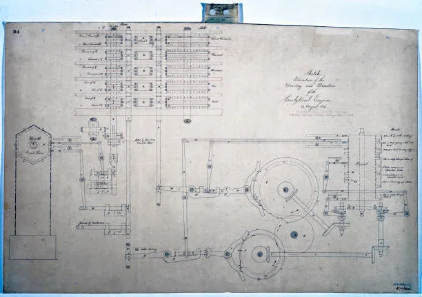
Ada Lovelace · 1815–1852
Next in our story is Ada Lovelace, with a love for logic and an eye for the future, she worked ahead of her time and space.
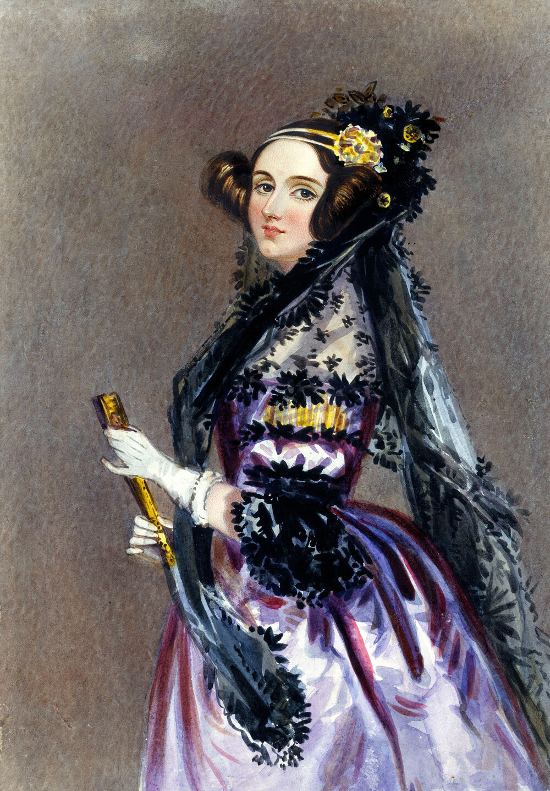
The first computer programmer
Ada Lovelace was asked to translate a document on the analytical engine from French to English. She expanded its functionality in the process.
She worked closely in collaboration with Charles Babbage, as she added appendices and converted the formulae for Bernoulli numbers into a step-by-step program.
While Babbage wrote the first computer program, Ada Lovelace is credited as the first computer programmer for the step-by-step program she developed for the computation of Bernoulli numbers.
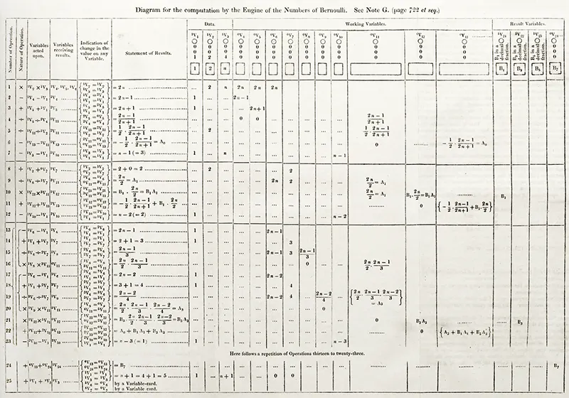
Ada Lovelace
This is where she realized that such an engine that can manipulate numbers can be used for various purposes such as for composing music.
Marking the Conceptual birth of general purpose Computers
Music follows algebraic laws, and any such system whose rules can be formalized can essentially be operated on by the machine Babbage had designed.
Thus music set its foot into the world of computers and machines.
So far it has just been an inspiration - a supporting case, soon it becomes more integral.
As time passed by ... Many more machines were built each one better than the one before.
One of these is worthy of mention: The ENIAC - Completed 1945
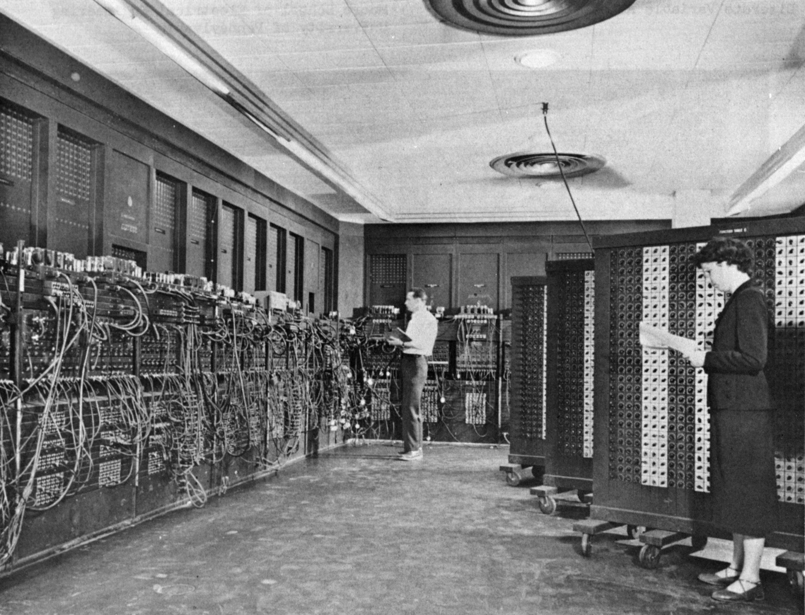
The ENIAC
Glen Beck (background) and Betty Snyder (foreground) programming ENIAC at the Ballistic Research Laboratory. U.S. Army photo.
The ENIAC
It is known as the first General Purpose Computer - A machine that can be programmed to perform different tasks.
What the ENIAC allowed · Reprogrammability: one machine, many different problems.
The ENIAC's shortcomings
But it had several drawbacks and limitations which were recognized and it was deemed essential to fix and improve on them.
Only 20 accumulators with 10 digits each. Power-hungry tubes made it hard to scale.
No stored program. Every new problem meant rewiring it by hand.
Reading bulbs and logging values by hand took a lot of man hours.
Problem I · Limited working memory
Memory was not easy to scale because each accumulator used 36 vacuum tubes and these were very power hungry.
There was need for a cheaper way to store working memory.
The solution · Mercury delay lines
Mercury Delay lines were found as a cheaper more practical and efficient alternative to accumulators. They were used to expand the working memory at a large scale.
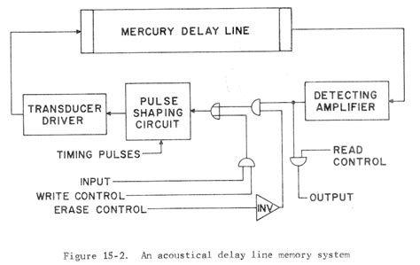
Why sound?
Sound was way slower than electromagnetic waves and hence a greater delay could be achieved with a shorter length tube.
Piezoelectric crystals were used to convert between acoustic waves and electricity.
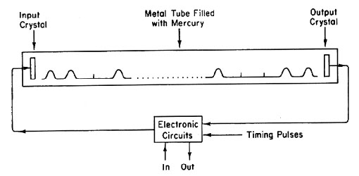
Problem II · Reprogramming
The ENIAC did not have any notion of a stored program.
It needed humans to rewire it physically to implement different programs on it.
This cable work, was tiresome, and recognized as a bottleneck that had to be resolved.
The solution
The stored-program computer: keep the program in memory, alongside the data. This ame up in later programs. We delve no further, since this is the outside the scope of the project.
Problem III · Debugging
Debugging ENIAC was hard and required a lot of man hours.
Each accumulator had a series of bulbs connected to it signalling the value stored by it.
This was logged by humans and then used to debug the program/ find a faulty accumulator.
The debugging problem
Watching bulbs and noting down values was tiresome, needed more labour and an overkill for most simple debugging cases
Like finding out if the program has halted, entered an infinite loop, is stalling, etc.
The solution
This problem was solved by introducing hooters.
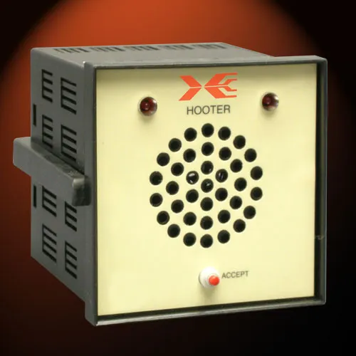
These were electricity to sound transducers.
They were of two kinds: Passive Sonification and Active Audio.
Passive sonification referred to hardware eavesdropping by connecting small electrical components on a wire that sensed voltage switches and converted the rate of voltage change to sound.
Live demonstration · Passive sonification
The speaker eavesdrops on a register.
Press Run. Counting up flips bit 0 on every pass, so the arithmetic itself makes the tone.
Active audio referred to having special instructions which specifically signalled the transducer. The frequency of these signals was converted to sound of different pitches.
Live demonstration · Active audio
The program calls the speaker.
Press Run. One HOOT per trip round the loop gives a steady tone. Try Slow motion to see each pulse.
Now a person could just walk into the room and identify the stage of progress made by the program.
Debugging was also possible and reduced the amount of labour needed immensely.
This relation between computers and sound has so far only been a one way street, but the next steps in technology change this dynamic.
Sound becomes Music.
Elementary observations
Elementary observations · 3
However a 1-bit speaker was too rudimentary to be able to create good music. It lacked the ability to create smooth sound waves.
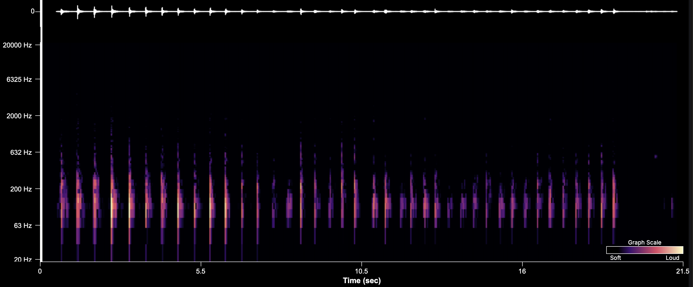
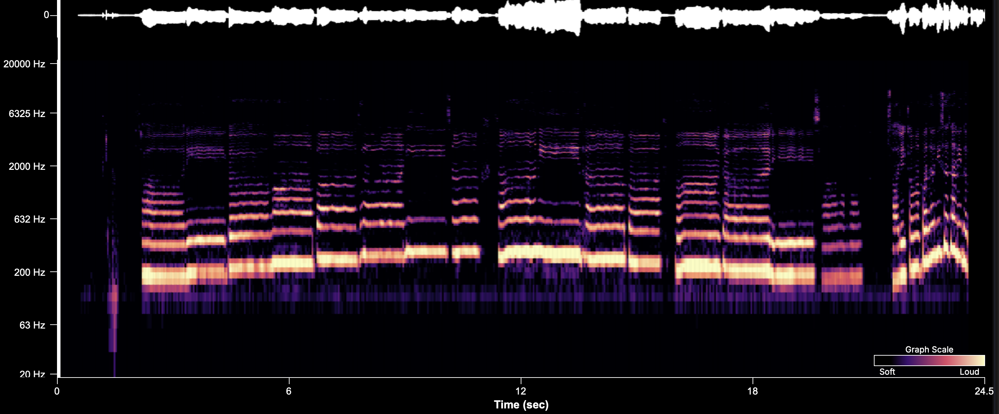
A new field
The field that worked on this problem was called “Computer Music” and “Digital Sound Synthesis”.
It falls into the realm of what is today called “Digital Signal Processing”.
Several audios of digitally created music have been filmed as the field progressed.
Demonstrations · the listening bench
Listening to a program.
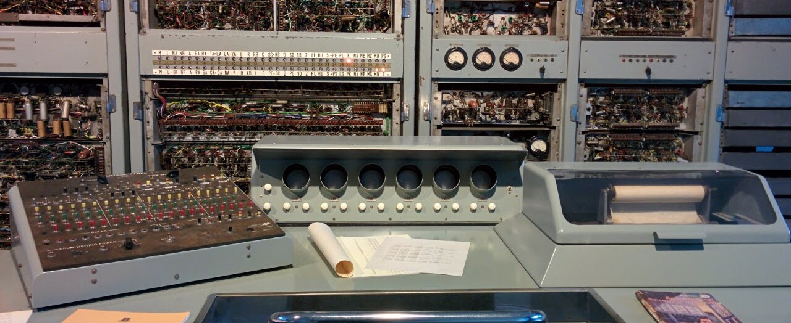
Sydney, Australia · Mid-1951
CSIRAC
Data was arranged inside mercury acoustic delay-line memory so that cyclic bit readouts pulsed the diagnostic speaker coil at audible frequencies.
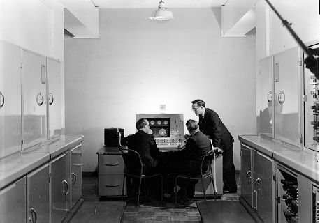
Manchester, UK · Autumn 1951
Ferranti Mark 1
Strachey used the machine's dedicated single-pulse hooter instruction inside cycle-counted CPU delay loops, recorded on-site by a BBC mobile broadcast unit.
Plays from YouTube. Open on YouTube ↗
Bell Labs, New Jersey · 1957
The Silver Scale
The computer calculated every sample of the sound wave as a number. The numbers were written to tape, and a digital-to-analog converter turned them back into sound.
Zooming out · later developments
From computing sound to capturing it
Real sounds recorded on disc and tape, then cut, looped and replayed as an instrument, years before computers made music.
The computer calculates the waveform sample by sample; a DAC turns the numbers into sound.
An ADC and fast memory let the computer record real sound and play it back from a keyboard.
Together these grew into digital signal processing: the basis of every music app today.
ARIGATTO
♪ God Save the King · played by the Ferranti Mark 1, Manchester, 1951